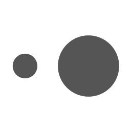
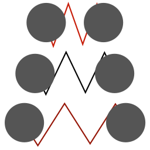
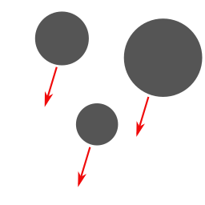
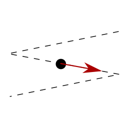
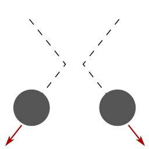
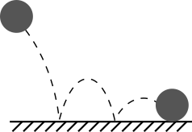

|  | masses have different sizes |
|  | spring stretch indicated by redness |
|  | uniform acceleration (change using arrow in the corner) |
|  | dots move at constant velocity, except for reflections at walls |
| masses slowed down by air resistance | |
|  | collisions between masses are perfectly elastic |
|  | collisions with walls lose energy |
I’m a Research Software Engineer in the CTRL team at Meta.
Use the navigation menu at the top/left to learn more, or contact me using one of the links below.